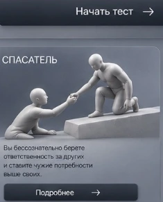

Выбирайте первый отклик
Не анализируйте вопрос слишком долго. Обычно первая реакция точнее всего отражает привычную внутреннюю стратегию.
20 вопросов помогут определить внутренний способ адаптации, который влияет на ваши решения, отношения и повторяющиеся жизненные ситуации.
Тест не является медицинской диагностикой и не заменяет консультацию специалиста.
В тесте нет хороших и плохих результатов. Каждый ответ помогает увидеть способ, с помощью которого ваша внутренняя система пытается сохранять безопасность, близость и контроль.
Не анализируйте вопрос слишком долго. Обычно первая реакция точнее всего отражает привычную внутреннюю стратегию.
Отвечайте не по одной отдельной ситуации, а по тому, как обычно происходит в отношениях, работе и важных решениях.
Тест строит гипотезу о ведущей стратегии, а не оценивает вашу личность и не ставит диагноз.
Вопросы опираются на современные представления о схемах, привязанности, защитных механизмах и внутренних частях личности.
Мы сопоставляем ответы, определяем ведущий механизм адаптации и формируем индивидуальное описание результата.
Это займет несколько секунд

Одинаковая стратегия у разных людей может формироваться по разным причинам. На встрече мы исследуем вашу историю, внутренние конфликты и ситуации, в которых привычная стратегия начинает управлять решениями вместо вас.
Почему именно у вас эта стратегия сформировалась так и почему продолжает влиять на вашу жизнь сегодня?
Иногда одной встречи достаточно, чтобы увидеть механизм, который годами оставался незаметным.
Консультация не является медицинской услугой и не заменяет диагностику или лечение у врача.
Текущие ответы и результат будут удалены.